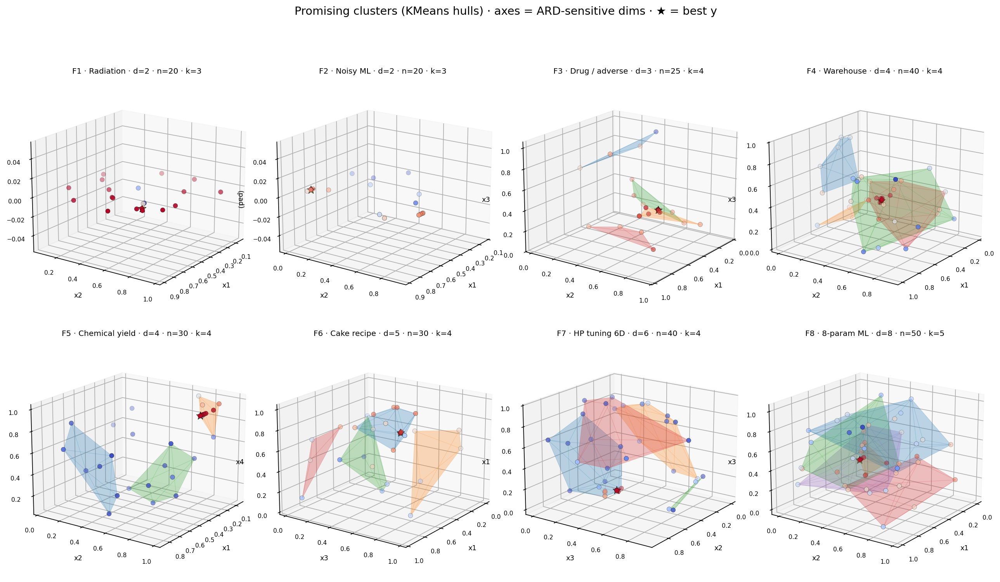
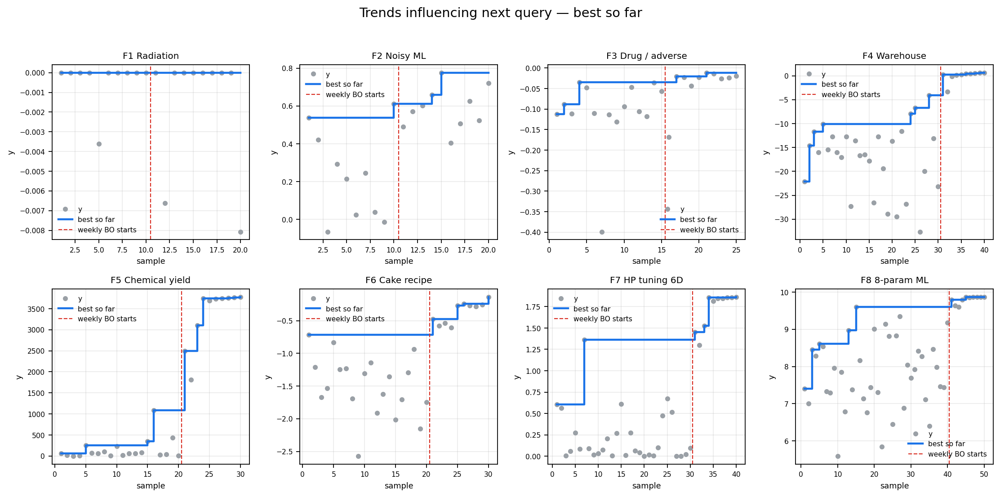
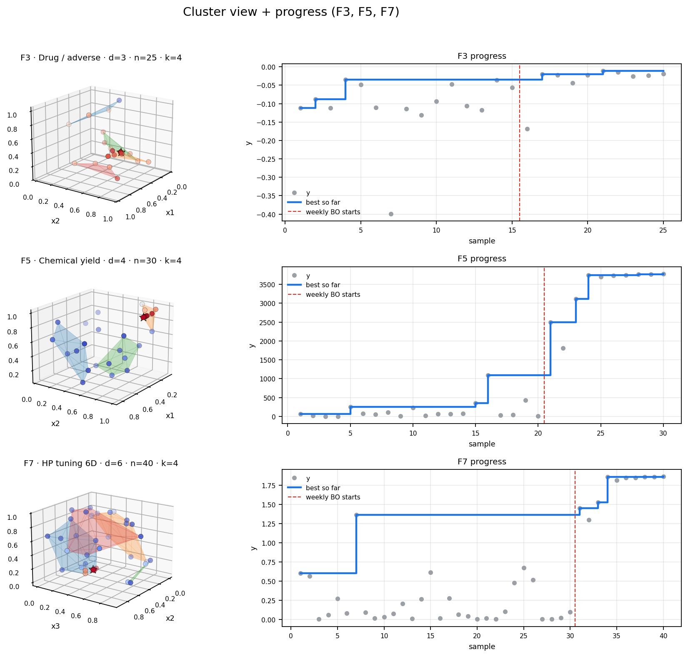

KMeans hulls on ARD-selected axes (GP Matérn length scales). Gold star = incumbent. Generated by scripts/make_cluster_gallery.py from data/function_*/ through Week 10.
scripts/make_cluster_gallery.py
data/function_*/


